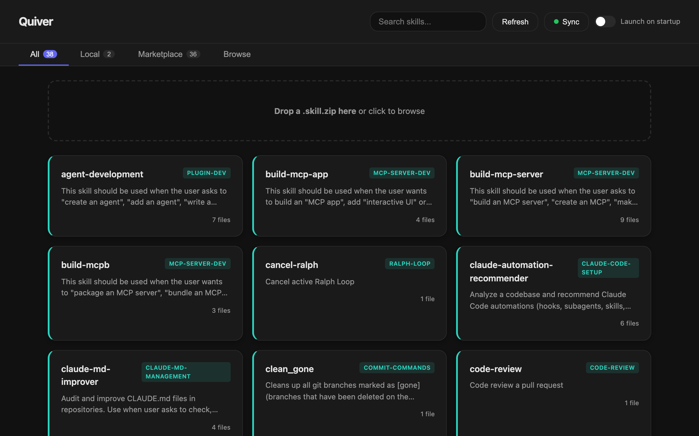

Quiver is a local web UI for browsing, installing, and managing your Claude Code skills and marketplace plugins — without touching the terminal.

Local skills, marketplace plugins, and project-specific commands all live in different directories with no unified view.
The only way to manage Claude Code skills is through the terminal — no GUI, no search, no drag-and-drop.
Marketplace plugin skills hide in nested directories several levels deep, making them nearly impossible to discover.
A clean, focused tool built for Claude Code users who want a real interface.
Quiver scans ~/.claude/skills/ and all your marketplace plugins, showing everything in a single searchable grid. Colour-coded so you always know what's local and what's from a plugin.
Point Quiver at a Git repo and your skills follow you everywhere. Push from your work Mac, pull on your home Mac — or share a team repo so everyone stays in sync. Works with any Git host.
The Browse tab surfaces skills from community marketplaces — toggle sources on or off, filter by category, and install anything with one click. No URLs, no cloning, no terminal.
Quiver tracks every plugin you install and checks marketplace sources for newer versions. An amber badge appears when an update is available. One click to update. No manual version tracking, no re-cloning repos.
Click Edit on any local skill to modify its content directly in the web UI. Save or cancel — no text editor, no file path hunting, no terminal. Your changes are written straight to disk.
Got a .skill.zip from a teammate or found one online? Drop it straight onto Quiver. It unpacks, registers, and appears in your grid instantly. No commands, no path wrangling.
Download the standalone Quiver.app (~1.8MB — no installer). Turn on Launch on Startup and your bookmark at localhost:3456 always works, even after a reboot.
Pick the install method that suits you.
Click the download button. ~1.8MB — no installer, no dependencies to manage.
Drag to Applications. Right-click → Open to bypass Gatekeeper the first time (standard for unsigned apps).
Quiver opens localhost:3456 and scans your skills automatically. That's it.
Save this file to your computer. It tells Claude how to install and launch Quiver for you.
Download SKILL.mdIn Claude, go to Customize → Skills → Create plugin → Upload plugin and upload the file.
Claude will install everything and open the web UI for you. No terminal needed.
Quiver opens http://localhost:3456 automatically. Bookmark it.
The full CLI is available for power users and automation.
Quiver is MIT licensed. File issues, submit skills, or fork it and build your own backend. Claude Code users built this for Claude Code users.